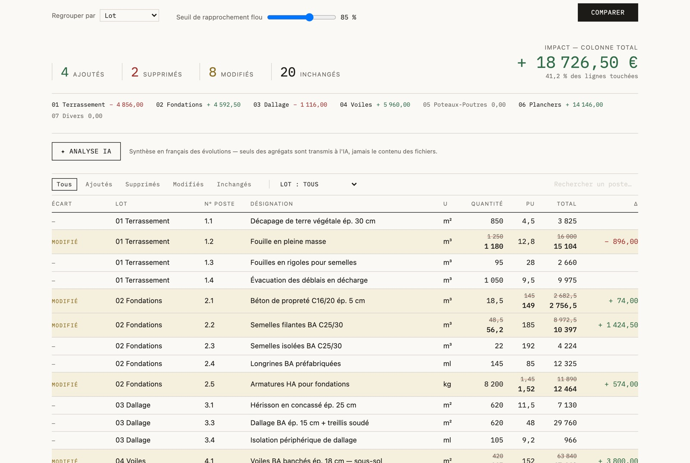

Import
Files in .xlsx, .xls or .csv, multi-sheet; header row detected even under a title block, French-formatted numbers included.
Case study · 2026
An Excel file comparison tool for engineering consultancies: give it two versions of the same quantity takeoff and it shows exactly what changed, with differences in euros, anomalies and a plain-language summary in French.

How it works
docker compose up starts the API and the interface.
Files in .xlsx, .xls or .csv, multi-sheet; header row detected even under a title block, French-formatted numbers included.
"Qté" matched with "Quantité": domain synonyms first, then fuzzy matching, editable in the interface.
Added, removed and modified rows; renumbered items found by similarity. 100,000 rows in ~6 s.
Rule-based, no AI: duplicates, critical empty cells, outliers, Quantity × Unit price ≠ Total.
Anthropic/OpenAI API, free local Ollama model, or rule-based fallback. The AI only receives aggregates, never the files.
Three-tab Excel report (summary, color-coded differences, anomalies) and a CSV ready for French-locale Excel.
Screenshots


Technical decisions